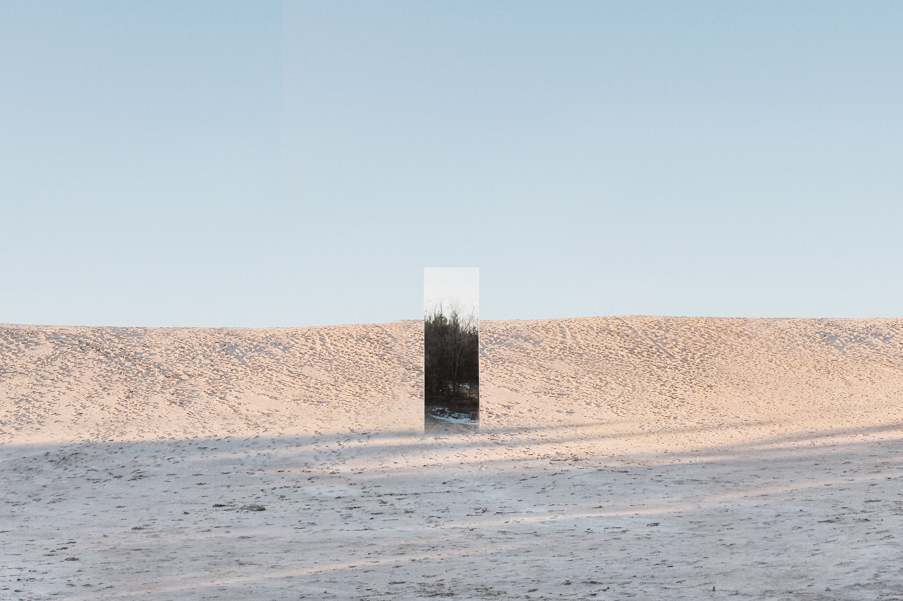
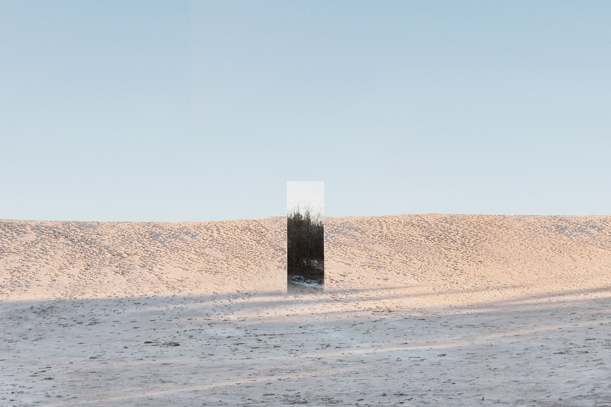

Making Room is the product of a year-long design investigation into the changing landscapes of domesticity, privacy, and the identification of self.
A series of 7 photographs feature a single mirror in remote landscapes across Southern Ontario. While absent of human activity, these landscapes implicate the viewer through the intervention of the mirror.
This series instigates parallel commentary surrounding how liminality influences the making of a contemporary home, in both space and self. Come talk with me.